通过自蒸馏进行强化学习
本文出自苏黎世联邦理工 Andreas Krause 组，作者团队横跨 ETH、马普所、MIT、Stanford。它提出了一个新的训练范式 RLRF（Reinforcement Learning with Rich Feedback，富反馈强化学习），以及该范式下的具体算法 SDPO（Self-Distillation Policy Optimization）。其最吸引人的卖点是：SDPO 可以作为对现有 RLVR 流水线的最小改动（仅替换优势函数）落地，却能在科学推理、工具调用、竞赛编程三类任务上同时提升样本效率与最终精度，并在测试时把难题的"发现解"速度加快 3 倍。
1. 背景：RLVR 的信息瓶颈
大模型后训练的主流配方是 RLVR：给定问题 $x$，模型采样答案 $y\sim\pi_\theta(\cdot\mid x)$，环境返回一个标量奖励 $r\in\mathbb{R}$（编程任务里常是单元测试 0/1 通过）。GRPO 等策略梯度方法用组内相对奖励估计优势。这套机制有两个根本痛点：
- 信用分配瓶颈：一整段长达数千 token 的回答，只换来一个标量奖励。模型无从得知"具体错在哪一步"，只知道"整体对/错"。
- 稀疏性导致学习停滞：当一组 rollout 全部得到相同奖励（常常全为 0）时，GRPO 的组相对优势坍缩为零，梯度消失，无法学习。这正是难题上 RLVR"找到第一个解之前根本学不动"的原因。
一个自然的替代是从强教师蒸馏——它能提供稠密的 token 级监督。但在线学习的目标恰恰是突破现有模型的能力上限，此时"更强的外部教师"往往并不存在。论文的核心论点由此而来：
1.1 从 RLVR 到 RLRF
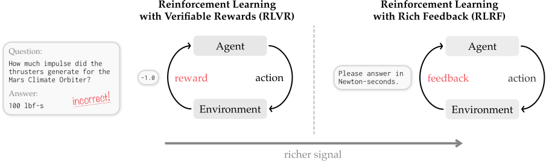
作者把这一更一般的设定形式化为 RLRF：反馈 $f$ 可以是 agentic 系统所达到的任意状态的任意 tokenized 表示。核心问题随之变为：如何在不依赖外部强教师监督的前提下，把富反馈转化为有效的信用分配？
1.2 核心洞察：把当前策略当作"自教师"
出发点是一个简单观察：LLM 本身已经具备使用反馈的强大机制——上下文学习（in-context learning）。当把反馈喂进上下文，同一个模型往往就能识别出可能的错误并提出修正。已有大量工作（Reflexion、Self-Refine 等）利用这一点反复生成修正答案。
但 SDPO 的做法不同：它不让模型重新采样一个新回答，而是用当前策略作为自教师，去重新评估已有的那条 rollout。把反馈放进上下文，模型的 next-token 分布发生了改变，于是自教师可以在每个具体 token 位置上对学生的原始选择表示"赞同"或"反对"——这就产生了稠密的、logit 级的信用分配。
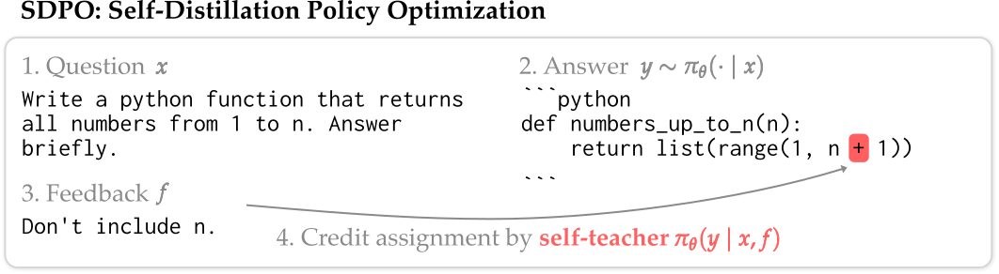
return list(range(1, n + 1))；③ 反馈 $f$："Don't include n."；④ 自教师重新评估原答案各 token 的 $\log(\Pr_{\text{self-teacher}}/\Pr_{\text{student}})$，红色高亮精确落在 + 1 这个 token 上（自教师强烈反对）。关键点：模型仅凭"回顾"就定位了错误，无需被告知正确解；且激活是稀疏的，只在出错处亮起。这张图是 SDPO"稠密但稀疏激活"信用分配的直观证据。2. SDPO 方法
SDPO 是一个在线（on-policy）算法。下表把它放在四种后训练方法的坐标系里：它同时拥有"在线采样 + 富反馈 + 不需要外部强教师"三项优势，这是其它方法都凑不齐的组合。
| 方法 | 采样 | 信号 | 反馈来源 |
|---|---|---|---|
| SFT / 蒸馏 (Hinton 2015) | ✗ 离线 | ✓ 富 | ✗ 需强教师 |
| On-Policy 蒸馏 (Agarwal 2024) | ✓ 在线 | ✓ 富 | ✗ 需强教师 |
| RLVR / GRPO (Lambert 2025) | ✓ 在线 | ✗ 弱（标量） | ✓ 环境 |
| SDPO（本文） | ✓ 在线 | ✓ 富 | ✓ 环境 |
2.1 蒸馏损失与梯度
核心对象是自教师 $\pi_\theta(\cdot\mid x,f)$。反馈 $f$ 可包含两类信息：环境输出（如代码运行时报错）和一个样例解（若同组其它 rollout 已解出该题）。SDPO 用 KL 散度衡量学生与教师 next-token 分布的差异，优化标准的 logit 蒸馏损失：
逐项拆解：求和遍历回答的每个位置 $t$；左侧 $\pi_\theta(\cdot\mid x,y_{<t})$ 是学生（不看反馈）在该位置的 next-token 分布；右侧 $\pi_\theta(\cdot\mid x,f,y_{<t})$ 是自教师（看了反馈 $f$）的分布。stopgrad 至关重要——它阻断梯度流回教师，防止教师反向退化去迎合学生、从而忽略反馈 $f$。教师的直觉作用是：基于反馈 $f$ 回顾性地判定学生原答案"在哪里、以何种方式"出了错。
论文进一步证明 SDPO 本质是一个策略梯度算法（Proposition 2.1）：
这是一个 logit 级的（取负的）策略梯度，其优势函数由自教师估计。正因如此，SDPO 可以复用标准 RLVR 实现，只需把优势换掉。
2.2 与 GRPO 的对照：稠密 vs 常数
把 GRPO 与 SDPO 的优势并排写出，差别一目了然：
GRPO 的优势只作用于被采样的那个 token，且在整条 rollout 内是常数。SDPO 的优势则：仅在"学生与教师完全一致"的 token 上为零；对教师认为更可能的 token 为正、更不可能的为负。于是 SDPO 在两个维度上扩展了 RLVR：① 从 1-bit 反馈扩展到任意 token 序列作为反馈；② 用这份富反馈估计稠密的 logit 级优势。
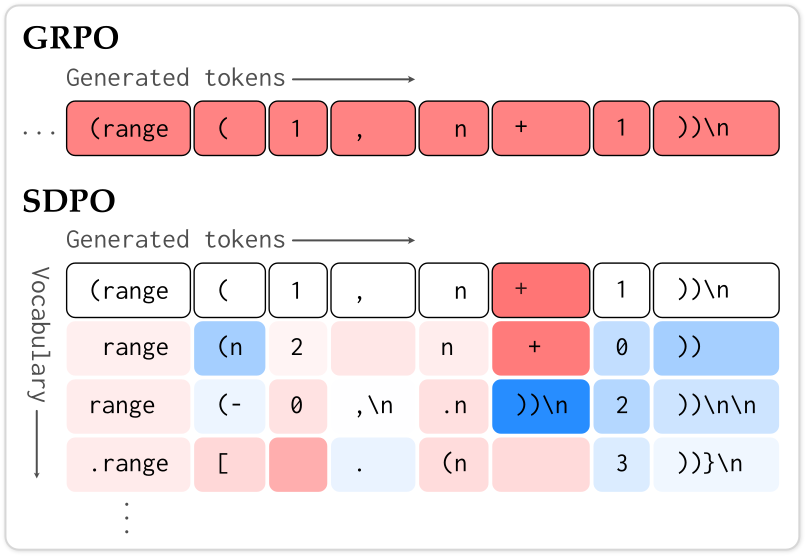
(range ( 1 , n + 1 ))\n 的每个 token 都被涂成同一种红色——常数优势。下排 SDPO：纵轴是整个词表 $V$，横轴是生成位置；每个位置对 $|V|$ 个候选 token 都赋一个独立优势（红=变不可能，蓝=变更可能）。可见在 + 这一列，自教师把 + 涂红、把 )/0 涂蓝，精确指出"应改成 range(1, n) 不含 n"。实践中用 top-K + 尾概率近似，每条序列产生 $|y|\cdot(K+1)$ 个独立优势。这种紧密联系还让 SDPO 可以像 PPO 一样，用 clipped importance sampling 直接扩展到离线（off-policy）数据（附录 A.4）。
2.3 稳定性改进与计算开销
两项稳定化技巧：① 正则化自教师——用学生参数的指数移动平均（EMA），或把当前教师与初始教师插值（trust-region）；② 用对称的 Jensen-Shannon 散度替代 KL 作蒸馏损失（这一点在外部教师的 on-policy 蒸馏中也被证明能提升稳定性）。
计算与显存：SDPO 相对 GRPO 的唯一额外开销是计算自教师的 log-probs，而这可以高度并行，远快于串行生成。为避免同时存放学生与教师的完整 logits，作者用 top-K 蒸馏（如 $K=100$）近似 KL，几乎零显存开销却保留绝大部分信息。
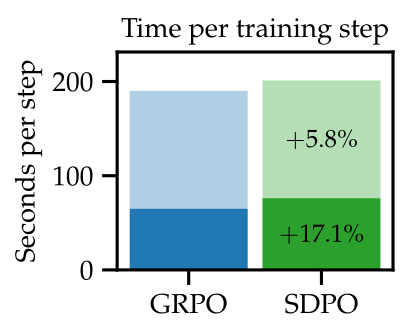
3. 无富反馈环境下的学习（§3）
第一组实验最反直觉：即使在只返回标量奖励的标准 RLVR 环境里，SDPO 也能赢。诀窍是——把同批次中成功的 rollout 当作失败 rollout 的"反馈"。自教师拿学生的错误尝试去和一个正确解对比，就能定位错处、给出稠密信用。
设定：科学问答（化学/物理/生物/材料，取自 SciKnowEval L3 推理子集）与工具调用（ToolAlpaca）。起始模型 Qwen3-8B 与 Olmo3-7B-Instruct，报告 avg@16 对墙钟时间。基线是集成了多项近期改进（非对称裁剪、去偏归一化、off-policy 校正）的强化版 GRPO。每次运行用 4×NVIDIA GH200。
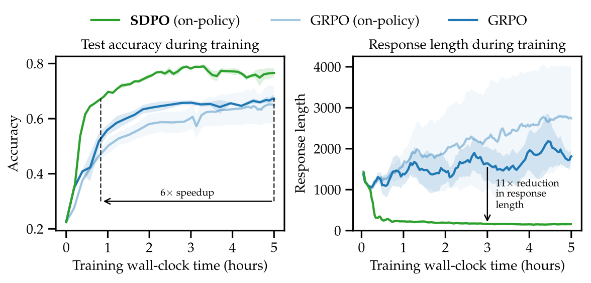
主结果（Table 3 节选，1h / 5h 内最高 avg@16）：SDPO 几乎在所有 run 上超过 GRPO，常常大幅领先；SDPO 训练 1 小时已接近 GRPO 训练 5 小时的水平。聚合精度 70.2% vs 66.6%。
| 模型 / 方法 | 化学 5h | 物理 5h | 生物 5h | 材料 5h | 工具 5h |
|---|---|---|---|---|---|
| Qwen3-8B + GRPO | 74.5 | 72.7 | 59.9 | 77.1 | 67.7 |
| Qwen3-8B + SDPO | 80.9 | 75.6 | 56.8 | 78.4 | 68.5 |
| Olmo3-7B + GRPO | 56.7 | 63.3 | 55.8 | 75.0 | 65.0 |
| Olmo3-7B + SDPO | 80.0 | 66.1 | 52.8 | 79.1 | 62.1 |
3.1 自蒸馏学会"简洁推理"
一个稳定且引人注目的副产物：SDPO 的回答平均短 3 倍以上，在 Olmo3 化学上甚至短 11 倍，精度却更高。论文给出了定性解释——GRPO 的长回答往往源于"表面推理"：大量 "Hmm"/"Wait" 填充词、原地打转重复同样的计算。
同一道 logD 化学题（正确答案 C），训练 50 步后的回答对比：
GRPO（5,549 token）：……"Wait I'm going in circles"……反复出现 25 次 "Wait"、9 次 "No."、5 次 "Hmm."，"101.85≈69.3" 这个计算重复了 4 次……最后选 B（错）。
SDPO（764 token）：直接分析 pH 7.4 下官能团电中性、亲疏水平衡，估计 logD 落在 2.0–3.0，给出 2.61……选 C（对）。短 7 倍以上、零循环推理。
作者推测这源于 SDPO 的稠密信用分配：每个 next-token 都被赋予具体优势，导致优势本身是稀疏的，从而抑制了无意义的冗长。有效推理未必冗长——SDPO 改善的是"如何推理"，而非"推理多长"。
4. 富反馈环境下的学习（§4）
编程是富反馈环境的典范：运行时错误、失败的单元测试都是天然的文本反馈。作者用 LiveCodeBench v6（131 道 2025 年 2–5 月发布的竞赛题）评测，采用公开/私有测试划分（公开测试训练用、私有测试验证用），主模型 Qwen3-8B。Figure 1（见报告开头逻辑对应的主图）显示：
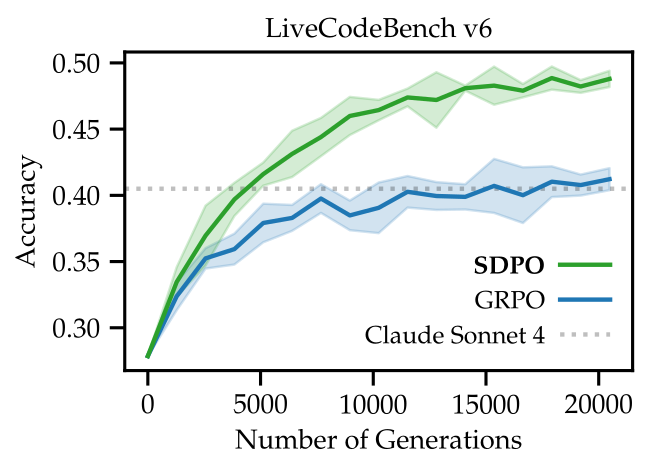
4.1 模型越强，SDPO 收益越大
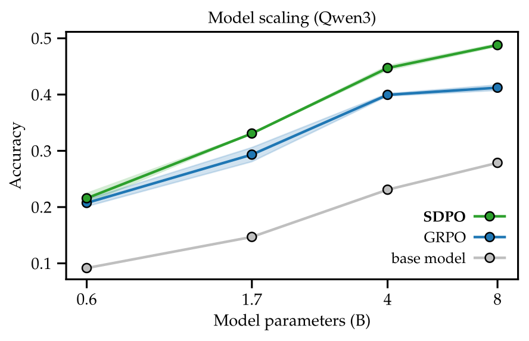
4.2 稠密信用分配消融
性能提升究竟来自"利用富反馈"（RLRF）还是"稠密信用分配"（SDPO 的 logit 级优势）？作者把 SDPO 退化成三档来拆解：logit 级（top-100 token）、token 级（仅最可能的 1 个 token）、sequence 级（把所有 token 优势平均成一个标量，像 GRPO 一样稠密度，但仍用富反馈 $f$）。
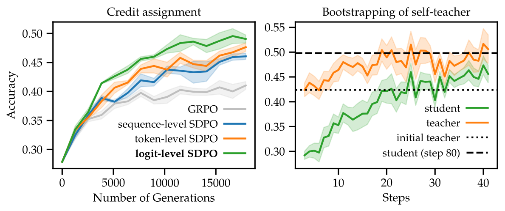
4.3 自教师在训练中持续变强
与标准蒸馏不同，SDPO 的自教师不是冻结的，而是随学生一起更新。Table 4 比较了几种教师正则化策略（截至第 90 步的最佳/平均精度）：
| 教师策略 | 最佳精度 | 平均精度 |
|---|---|---|
| $q_\theta$（不正则，随学生） | 36.1 ± 1.6 | 29.8 ± 1.3（最终发散） |
| $q_{\theta_{\text{ref}}}$（冻结在初始教师） | 48.8 ± 0.7 | 44.4 ± 0.2 |
| Trust-region（α=0.01） | 50.6 ± 0.9 | 45.6 ± 0.2 |
| EMA（α=0.01） | 49.3 ± 0.3 | 45.3 ± 0.2 |
结论：不正则的教师会发散；trust-region 与 EMA 都超过冻结教师，说明教师通过与学生共享参数确实在变强；但即便用冻结教师，SDPO 也表现良好。
4.4 在线自蒸馏缓解灾难性遗忘
把 GRPO 和 SDPO 的最终 checkpoint 拿到 IFEval、ArenaHard-v2、MMLU-Pro 等保留任务上测。同时引入一个离线基线：对自教师的成功生成做 SFT。
| 方法 | LCBv6（训练任务） | 保留任务平均 |
|---|---|---|
| Base | 27.9 | 43.5 |
| SFT on self-teacher（离线） | 42.7 | 41.4 |
| GRPO | 41.2 | 41.8 |
| SDPO | 48.8 | 42.4 |
SDPO 取得最佳的"性能–遗忘"折中：既学好了新任务，又最小化了旧能力退化。离线 SFT 蒸馏则在 LCBv6 上显著落后、遗忘也更严重——印证了离线模仿不稳定的既有发现。
4.5 哪种反馈最有用 & 能否与 GRPO 结合
反馈类型消融（Table 6）：编程环境有三类反馈——样例解（同组成功 rollout）、环境输出（运行时报错）、学生原始尝试 $y$。
| 反馈 $f$ 组成 | 教师精度(%) | SDPO 训练后学生(%) | 平均熵 |
|---|---|---|---|
| 仅环境输出 | 32.5 | 39.9 | 0.40 |
| 仅自身样例解 | 42.4 | 42.6 | 0.41 |
| 环境输出 + 样例解 | 42.5 | 48.3 | 0.38 |
| + 学生原始尝试 $y$ | 39.3 | 44.5 | 0.23（↓多样性） |
关键结论：环境输出与样例解互补，各自提供有用信号，二者结合最佳（学生 48.3%）。而把学生原始尝试 $y$ 也塞进教师上下文反而有害——它会把教师偏向学生原答案，把平均熵从 ~0.40 压到 0.23，"same output" 比例飙到 30%，削弱了探索。环境输出尤其关键，因为即使学生从未解出该题，它也能提供信号，这正是 RLRF 区别于 RLVR 的核心。
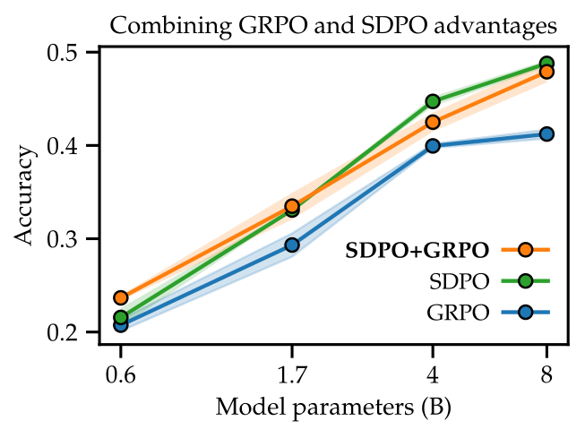
5. 测试时自蒸馏：攻克难题（§5）
最后一个场景最具想象力。给定单独一道极难的二值奖励题，目标是尽快"发现"一个解。作者定义：
这是 pass@k 向"序列化采样算法"的推广。RLVR 在这里彻底失效：二值奖励在找到第一个解之前没有任何信号，GRPO 优势恒为零。而 SDPO 每次尝试后都拿到富反馈，可以在从未解出的情况下就不断"修正"错误。
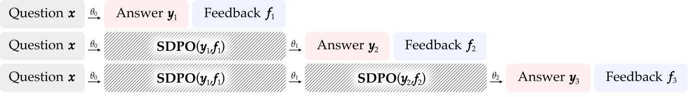
设定：从 LCBv6 选出 Qwen3-8B 能力上限处的题——hard（pass@64 < 0.5，19 道）与 very hard（pass@64 < 0.03，9 道）。对比 best-of-k（i.i.d. 重采样）、multi-turn（上下文拼接历史反馈，FIFO 滑窗保持 32k 内）、SDPO（batch=16）。
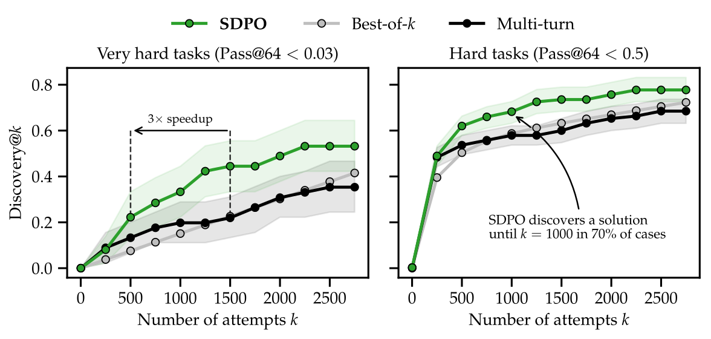
尤为有力的两个观察：① 有一道题（Q3）只有 SDPO 解出，best-of-k 与 multi-turn 在 2750 次尝试内都失败；SDPO 在第 321 次尝试（仅 20 步自蒸馏迭代）就发现了解。② 初始自教师本身解不出这些难题（78% 的题上初始精度恰为 0%），但它的信用分配足够有效，使 SDPO 能迭代式地精炼策略并最终解题——这才是关键：单轮上下文反馈不够，但把反馈反复压进权重就够了。
6. 深度分析与洞察
每个语言模型都隐式是一个 PRM
过程奖励模型（PRM）为序列每一步估计奖励以改善信用分配，但 PRM 通常是独立于学生的额外模型，带来显著显存开销，且仍训练在标量奖励上。SDPO 的洞察是：只要给定富反馈，每个语言模型都通过"回顾"隐式地成为一个 PRM——自教师就是这个免费的、与学生共享参数的过程奖励来源。
与 BYOL / 专家迭代的联系
SDPO 概念上与"自举你自己的隐变量"（BYOL）和"专家迭代"相关：学生反复模仿一个改进版的自己。经典专家迭代用测试时搜索（树搜索、多数投票）构造"专家"；SDPO 则用上下文中提供的富反馈来构造更强的自己——这类似 BYOL 中的"增强视图"。
在线 vs 离线自蒸馏
已有工作用离线自蒸馏从环境反馈学习（在教师的生成上做 SFT）。本文明确指出并实验验证：离线自蒸馏显著逊于 SDPO 的在线学习——离线版训练学生去模仿教师的生成，而 SDPO 训练学生去避免自己生成中的错误，后者更契合在线 RL、也更抗遗忘。
7. 局限与展望
局限：
- 依赖基座的上下文学习能力：SDPO 主要适用于训练较强的基座；在弱模型上可能落后 GRPO（如 Qwen2.5-1.5B）。
- 依赖反馈质量：若环境提供的反馈无信息量或具误导性，模型可能无法从中学习。
- 小幅计算开销：需多算一遍回顾模型的 log-probs；对生成长度短、生成时间占比小的小模型，这部分开销相对更明显。
展望：① 长程与 agentic 设定——轨迹越长、越暴露中间状态，RLRF 越有吸引力；② 规模化训练动态——在前沿基座上做大规模多任务 SDPO；③ 超越可验证奖励——探索 SDPO 的回顾机制能否改善开放式文本生成或连续奖励任务的对齐；④ 推理行为研究——系统研究 reprompt 模板等因素如何塑造"简洁 vs 冗长"的推理风格。
8. 核心总结
- 新范式 RLRF：把环境反馈从标量奖励升级为 tokenized 富反馈，移除 RLVR 的信息瓶颈。
- 新算法 SDPO：用"看过反馈的当前策略"作自教师，把其修正后的 log-probs 蒸馏回学生——无外部教师、无奖励模型，仅替换优势即可接入现有 RLVR 流水线。
- 稠密信用分配：从 GRPO 的"整条序列一个常数优势"升级为"每位置每候选 token 一个独立优势"，且激活稀疏、精确定位错误。
- 三线全胜：标量环境 70.2% vs 66.6% 且回答短 11×；LCBv6 48.8% vs 41.2% 且超过 Claude Sonnet 4 / Opus 4；测试时难题发现解快 3×。
- 随规模涌现：自教师的回顾能力随模型增大而增强，预示在更强基座上潜力更大；并能实现"弱→强"真正自举，缓解灾难性遗忘。
来源链接
- 论文：arXiv:2601.20802 — Reinforcement Learning via Self-Distillation
- 代码：github.com/lasgroup/SDPO
- 作者单位：ETH Zurich · Max Planck Institute for Intelligent Systems · MIT · Stanford
- 基准/数据：LiveCodeBench v6、SciKnowEval、ToolAlpaca、IFEval、ArenaHard-v2、MMLU-Pro
本报告为基于论文原文的中文深度解读，所有图表均提取自论文 arXiv 源文件。图号与论文正文严格对应。